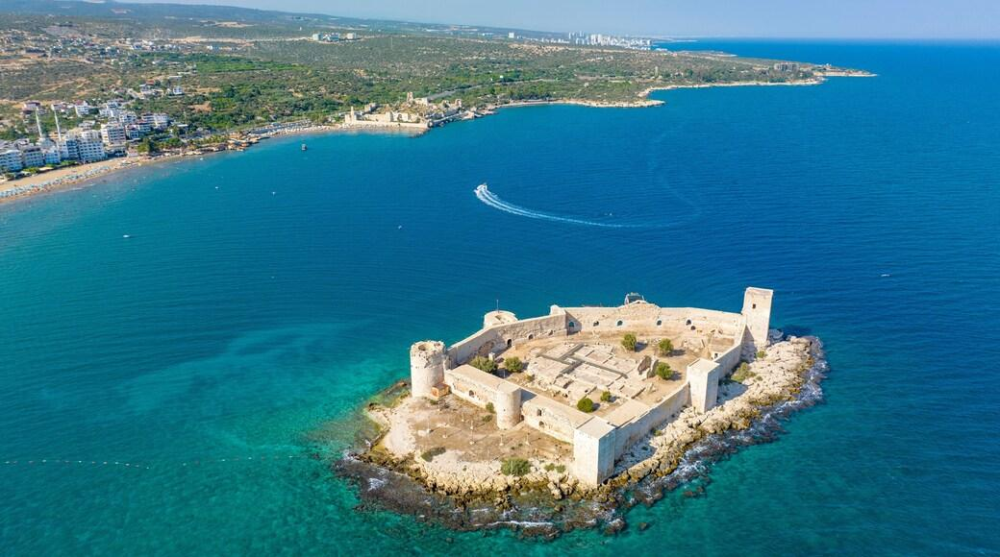
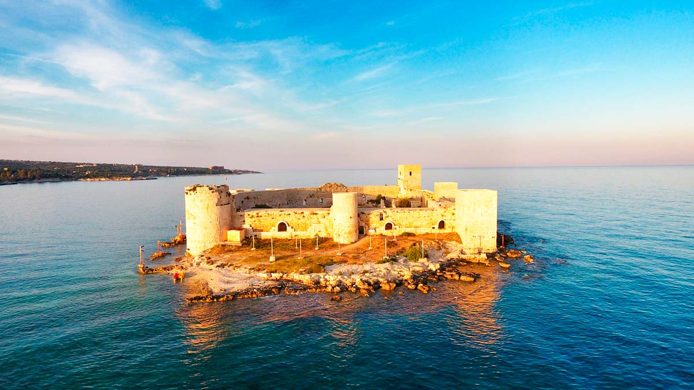
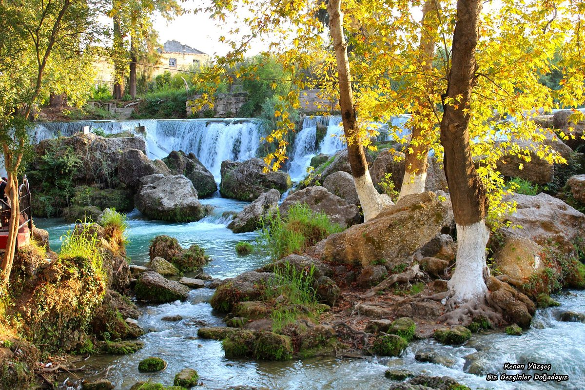

Mersin, Türkiye'nin güneyinde yer alan bir liman kentidir. Akdeniz'e kıyısı olan bu şehir, tarihi ve kültürel zenginlikleri ile bilinir. Mersin, aynı zamanda tarım ve sanayi açısından da önemli bir merkezdir.
Şehirdeki başlıca turistik yerler arasında Kızkalesi, Tarsus Şelalesi ve Mersin Marina bulunmaktadır. Ayrıca, Mersin'in mutfağı da oldukça zengindir ve özellikle tantuni ve cezerye gibi yöresel lezzetleri ile ünlüdür.

Mersin, Akdeniz kıyısında yer alan güzel bir şehirdir.

